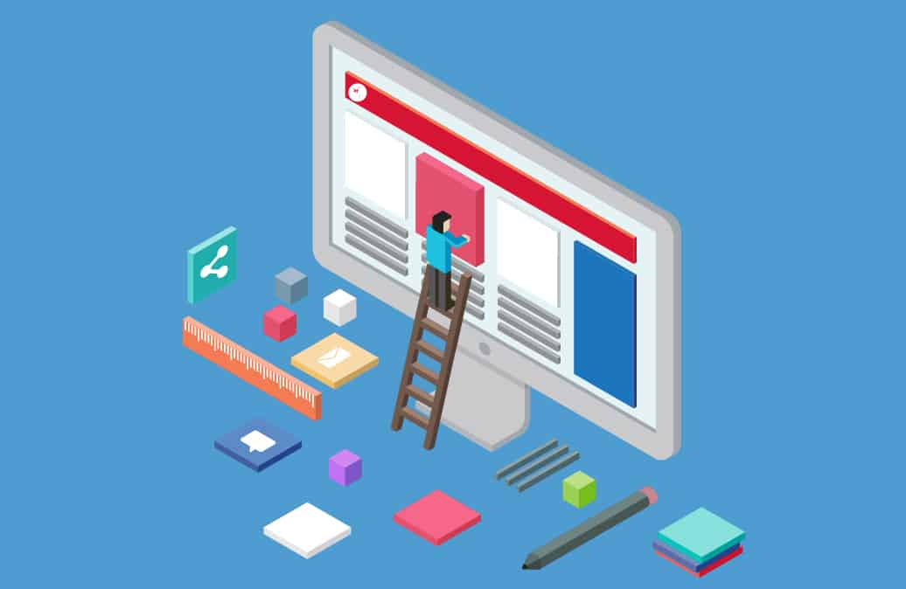

| Programmation (Jeux Vidéos / Applications) |
Concerne tout ce qui touche à l'étude, à la conception, à la construction, au développement, à la mise au point, à la maintenance et à l'amélioration des logiciels et autres applications. |
Ceci me passionne depuis que je suis jeune lorsque j'ai commencé à les utiliser en grande quantité et à essayer de voir l'aspect caché de ces derniers. |
 |
|
| Webmastering |
Le webmastering consiste à prendre en charge l’ensemble des étapes constituant le cycle de vie d’un site Internet. Nous assurons donc aussi bien la création du site que son exploitation et son évolution. |
La partie web étant large permet de pouvoir aider beaucoup de personnes et ainsi se démarquer. |
|
|
| Webdesign |
Le webdesign consiste en la partie visuelle d'un site web. |
étant interéssé dans le webmastering il est donc pour moi évident de m'interéssé dans l'aspect graphique de ce domaine |
 |
|